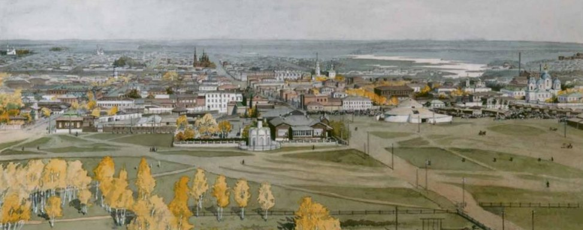
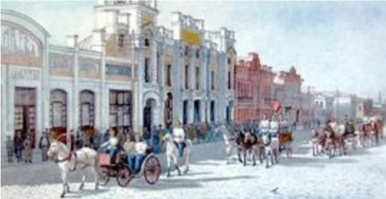

История становления Челябинска уходит своими корнями в XVIII век. Он был основан 13 сентября 1736 г. на реке
Миасс как сторожевая крепость на пути из Зауралья в Оренбург. В 1743 г. Челябинск стал центром крупной
Исетской провинции. В крепости находились Исетская провинциальная канцелярия, управление исетскими
казаками (с 1799 г. входили в состав Оренбургского казачьего войска), духовное правление, гостиный двор. В 1781
г. Челябинск получил статус уездного города.
Челябинск - крупный торгово-промышленный центр
В первой половине ХIХ века в среде горожан начинает формироваться торгово-ремесленная прослойка, которой
будет суждено превратить его в крупный торгово-промышленный центр. Уже к середине XIX столетия Челябинск
занял прочное место в ярмарочной торговле Урала.
Известность Челябинск приобрел в 1892 г. с окончанием строительства Самаро-Златоустовской железной дороги,
когда было открыто движение из Москвы до Челябинска. В 1896 г. была запущена в эксплуатацию железная
дорога на Екатеринбург. Челябинск стал важным промежуточным пунктом передвижения, своеобразными
воротами Сибири.
ЦитатаССЫЛКА


Панорама города Челябинска XIX века
Основные вехи развития Челябинска
1743: Челябинск - центр Исетской провинции
1781: Челябинск - уездный город Челябинского уезда